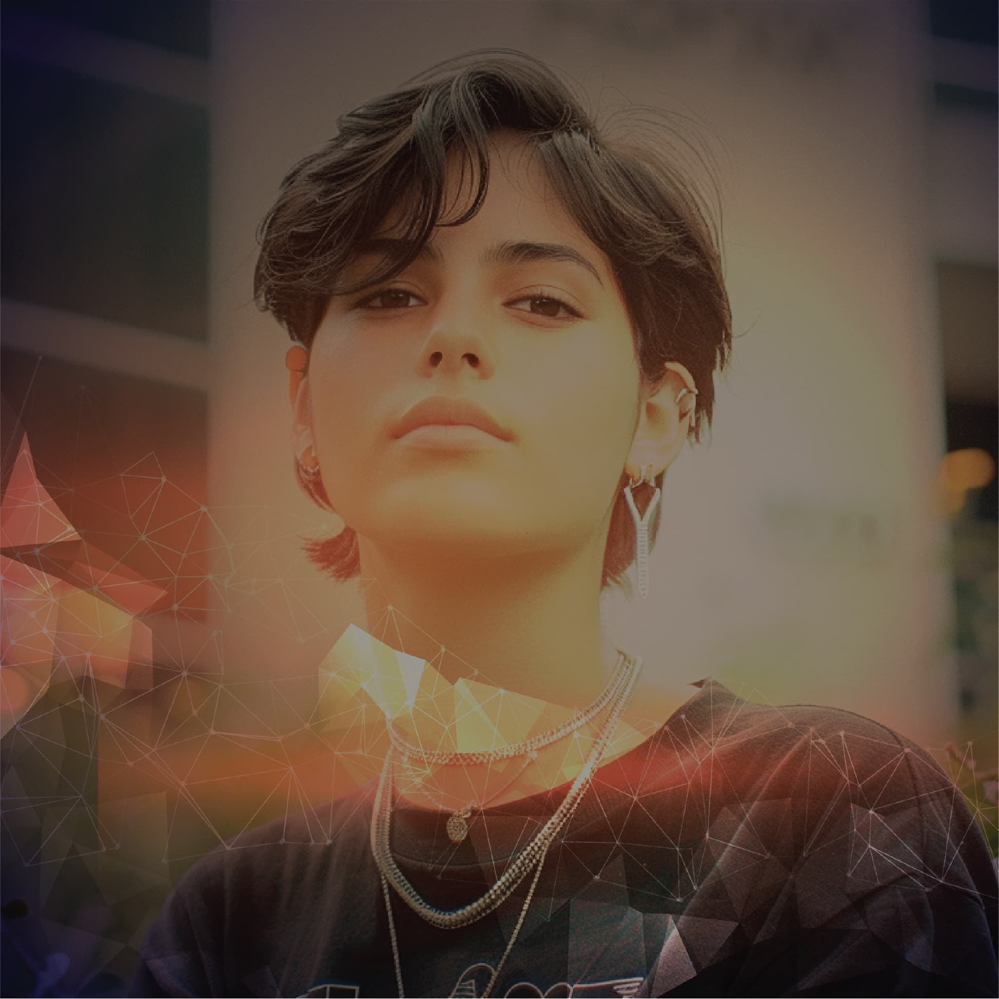

Tu próximo
capítulo
empieza aquí.
Hay una carrera que conecta con lo que te mueve. Estima tu puntaje, explora según tu interés y compara los programas de la convocatoria.
Una herramienta para orientarte en Jóvenes a la E.

Instituciones para explorar
39 instituciones en esta oferta.
Selecciona un logo para ver sus programas.
Desliza horizontalmente para ver todas las instituciones →
¿Qué te gustaría hacer?
No tienes que tenerlo todo decidido. Elige un interés y conoce los programas relacionados.
Lo que sueñas merece
un siguiente paso.
Explora los programas que te interesan y consulta los detalles de la convocatoria. Esta herramienta orienta tu elección; la inscripción se realiza en los canales de Atenea.
Simulación orientativa. Los puntajes de Jóvenes a la E 4 son referencias históricas y no garantizan un cupo en la sexta convocatoria.
Tu carrera puede estar más cerca de lo que crees
Recorre las cuatro dimensiones, mira cuántos puntos sumas y compara tu puntaje con referencias históricas de las carreras. Ninguna respuesta te quita puntos.
¿Quién eres?
Marca todo lo que aplique. Estas condiciones reconocen que llegar a la educación superior no es igual de fácil para todas las personas.
Si ninguna de estas condiciones te aplica, puedes continuar sin marcar. En este criterio sumarás 0 puntos.
¿Cómo lo verifica Atenea?
Tus características socioeconómicas
Elige tu grupo del Sisbén IV o, si no tienes Sisbén, tu situación. Se toma una sola opción.
¿Cómo lo verifica Atenea?
- Fuentes
- Departamento Nacional de Planeación (DNP), certificados de pertenencia étnica cargados en SICORE y SIMAT.
- Qué encuestas cuentan
- Solo encuestas de hogares de Bogotá Región, validadas por el DNP con marca 0 (registro válido) o 10 (en verificación).
- Municipios válidos
- Soacha, Cajicá, Chía, Cota, Facatativá, Funza, La Calera, Madrid, Mosquera, Sesquilé, Sibaté, Sopó, Tenjo, Tocancipá, Ubaté y Zipaquirá.
Tu prueba Saber 11
El mérito académico se mide con tu percentil o, si presentaste la prueba antes de 2015, con tu puesto.
¿Cómo lo verifica Atenea?
- Fuente
- ICFES. Solo cuentan exámenes en estado «PUBLICADO».
- Prueba con ajustes razonables
- Si presentaste el cuadernillo con ajustes razonables para población con discapacidad, se usa el percentil que el ICFES reporta para esa versión de la prueba.
Tu camino hasta hoy
¿Alguna de estas condiciones hace parte de tu trayectoria? Revisa también la opción de Saber 11.
Marca solo las condiciones que te apliquen. Si ninguna te corresponde, puedes ver tu resultado sin marcar opciones.
¿Cómo lo verifica Atenea?
Tu puntaje estimado
Lo que puedes hacer desde ya
¿Qué te mueve?
Elige lo que te gusta hacer y compara tu puntaje con el de la última persona que obtuvo cupo en cada programa en Jóvenes a la E 4. Es una referencia: en esta convocatoria cambian los cupos y los inscritos.
Antes de decidir, ten en cuenta
¿Este puntaje es el definitivo?
¿Qué significa el puntaje mínimo de JE4?
¿Cómo se asignan los cupos?
- Atenea verifica los requisitos de participación; quienes los cumplen quedan habilitados.
- A cada habilitado se le calcula el puntaje de selección (0 a 100) con las cuatro dimensiones.
- Los habilitados se ordenan de mayor a menor puntaje.
- En ese orden, y siguiendo la preferencia de programas de cada aspirante, se asigna el cupo si el programa aún tiene cupos y si hay recursos de Atenea o del Fondo de Desarrollo Local de la localidad de residencia.
¿Cómo se verifica mi información?
¿Qué pasa si empato con otra persona?
- Mejor puntaje global en Saber 11.
- Subgrupo del Sisbén IV más vulnerable.
- Mayor puntaje en vulnerabilidad estructural.
- Ser egresado de colegio oficial.
- Haber votado en las últimas elecciones populares organizadas por la Registraduría, que para esta convocatoria es la elección de presidente de la República del 21 de junio de 2026 (certificado electoral cargado en SICORE).
- Asignación aleatoria: a cada aspirante empatado se le genera un número aleatorio único, con semilla igual a la fecha del día siguiente al cierre de inscripciones (AAAAMMDD), y se prioriza el menor valor.
¿Qué colegios rurales dan puntaje? (Tabla 6)
- Colegio Gimnasio del Campo Juan de la Cruz Varela (IED): sedes U.B. Unión y Erasmo Valencia, Sumapaz.
- Colegio Campestre Jaime Garzón (IED): sedes U.B. Las Auras y Adelina Gutiérrez Palacios, Sumapaz.
- Colegio El Destino (IED), Usme.
- Colegio El Verjón (IED): sede El Verjón Alto, Santafé.
- Colegio Rural Pasquilla (IED), Ciudad Bolívar.
- Colegio Rural Quiba Alta (IED), Ciudad Bolívar.
¿Qué no incluye esta calculadora?
- La verificación de los requisitos mínimos de participación (numeral 5.6.3 del lineamiento).
- Los requisitos de admisión propios de algunas IES, como puntaje mínimo en Saber 11, entrevistas o pruebas.
- La disponibilidad de cupos y de recursos por localidad, que define si un puntaje alcanza o no.
- La línea de Talentos Excepcionales, que tiene reglas distintas.